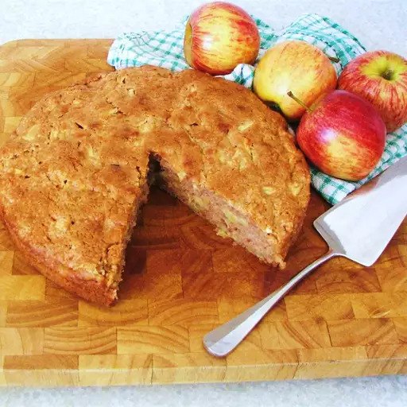

Apple Cake

Cinnamon Apple Bliss: Indulge in a Heavenly Delight!
Experience the perfect harmony of sweet apples and warm cinnamon in this irresistible apple cake. With a moist texture and delicate crumb, this homemade delight is made with love using simple ingredients. Prepare to be enchanted by the heavenly aroma and savor each delightful bite of this indulgent treat.
- Prep Time: 15 mins
- Cook Time: 30 mins
- Additional Time: 10 mins
- Total Time: 55 mins
Ingredients
- 1 cup vegetable oil
- 2 large eggs
- 2 cups white sugar
- 2 cups all-purpose flour
- 2 teaspoons ground cinnamon
- 1 teaspoon baking soda
- 1 teaspoon vanilla extract
- ½ teaspoon salt
- 4 cups diced apple without peel
Directions
- Preheat the oven to 350 degrees F (175 degrees C). Lightly grease and flour one 9x13-inch baking dish.
- Beat oil and eggs in a large bowl until foamy. Add sugar, flour, cinnamon, baking, soda, vanilla, and salt; mix well. Stir in apples. Pour batter into the prepared dish.
- Bake in the preheated oven until a toothpick inserted into the center of cake comes out clean, 30 to 40 minutes. Cool in the pan for 10 minutes.
Return to top
Return to main page